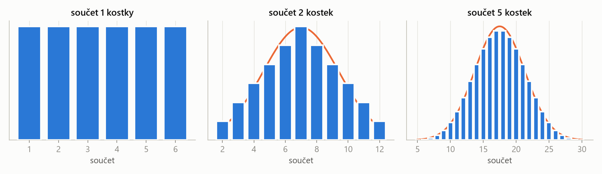
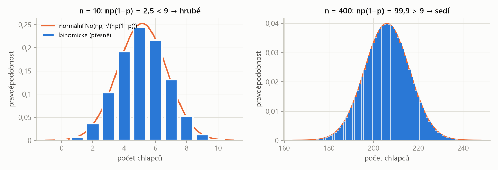

PSO – příprava na zkoušku · Limitní věty – PSO · https://balnerm.github.io/pripravy/pso/07_limitni_vety.html
Kapitola 7
Limitní věty
Proč je normální rozdělení všude? Protože součet mnoha nezávislých veličin má přibližně normální rozdělení, ať už jednotlivé sčítance vypadají jakkoli. To je centrální limitní věta. Díky ní lze počítat s binomickým rozdělením pro tisíce pokusů (Moivreova–Laplaceova věta) nebo s celkovou hmotností desítek lidí – úlohy sady 6.
Čebyševova nerovnost a zákon velkých čísel
Pro každou náhodnou veličinu X s konečným rozptylem a pro každé \(\varepsilon > 0\) platí
\[ p\big(|X - EX| \ge \varepsilon\big) \le \frac{DX}{\varepsilon^2}. \]velká odchylka od průměru je vzácná, a to pro jakékoli rozdělení. Odhad je hrubý (u normálního rozdělení vychází skutečnost mnohem lépe), ale nepotřebuje znát tvar rozdělení.
Je-li \(X\) počet výskytů jevu s pravděpodobností \(p\) v \(n\) nezávislých pokusech, pak pro každé \(\varepsilon > 0\)
\[ \lim_{n \to \infty} p\!\left(\left|\frac{X}{n} - p\right| < \varepsilon\right) = 1. \]relativní četnost se s rostoucím počtem pokusů ustálí na pravděpodobnosti. Proto má smysl pravděpodobnost odhadovat z dat – a proto se průměr měření blíží skutečné hodnotě.
Centrální limitní věta
Jsou-li \(X_1, \dots, X_n\) nezávislé veličiny se stejnou střední hodnotou μ a stejným rozptylem σ², pak pro dostatečně velké \(n\) má součet \(Y = X_1 + \dots + X_n\) přibližně normální rozdělení:
\[ Y \approx \text{No}\big(n\mu,\; \sigma\sqrt{n}\big), \qquad \frac{Y - n\mu}{\sigma\sqrt{n}} \approx \text{No}(0, 1). \]sečti hodně nezávislých náhodných vlivů a výsledek bude zvon. Střední hodnoty se sčítají (\(n\mu\)), rozptyly také (\(n\sigma^2\)), takže směrodatná odchylka roste jen jako \(\sqrt{n}\).

Tvar jednotlivých sčítanců nehraje roli – i z „ploché“ kostky vznikne sčítáním zvon. Proto smíme na součty (a průměry) použít normální rozdělení a tabulku Φ.
| \(n\) | počet sčítanců (lidí, měření, výrobků) |
| \(\mu\), \(\sigma\) | střední hodnota a směrodatná odchylka jednoho sčítance |
| \(n\mu\), \(\sigma\sqrt{n}\) | střední hodnota a směrodatná odchylka součtu |
Sčítají se rozptyly, ne směrodatné odchylky: \(D(Y) = n\sigma^2\), proto \(\sigma_Y = \sigma\sqrt{n}\). Odchylky jednotlivých lidí se zčásti vyruší (jeden je těžší, druhý lehčí), takže součet kolísá relativně méně.
Provozujeme vyhlídkovou loď. Kolik nejvýše lidí smíme vzít na palubu, má-li být celková hmotnost menší než 4500 kg s pravděpodobností aspoň 0,99? Hmotnost člověka má střední hodnotu 75 kg a směrodatnou odchylku 15 kg.
Řešení krok po kroku
1. Celková hmotnost \(Y\) ~ No\((75n,\ 15\sqrt{n})\) přibližně. Podmínka:
\[ p(Y < 4500) = \Phi\!\left(\frac{4500 - 75n}{15\sqrt{n}}\right) \ge 0{,}99 \]2. Φ je rostoucí, takže argument musí být aspoň \(u_{0{,}99} \approx 2{,}326\):
\[ \frac{4500 - 75n}{15\sqrt{n}} \ge 2{,}326 \]Po vynásobení \(15\sqrt{n}\) a převedení na jednu stranu:
\[ 75n + 34{,}9\sqrt{n} - 4500 \le 0 \]3. Kvadratická rovnice pro \(s = \sqrt{n}\):
\[ s = \frac{-34{,}9 + \sqrt{34{,}9^2 + 4 \cdot 75 \cdot 4500}}{2 \cdot 75} \approx 7{,}517 \]Tedy \(n = s^2 \le 56{,}5\).
4. n musí být celé a nejvýše 56,5, tedy 56. Kontrola: pro \(n = 56\) je argument 2,67 (pravděpodobnost 0,996), pro \(n = 57\) jen 1,99 (0,977 < 0,99).
Moivreova–Laplaceova věta: binomické → normální
Má-li X binomické rozdělení Bi(n, p) a je-li n velké a p ne blízko 0 ani 1, lze X aproximovat normálním rozdělením
\[ X \approx \text{No}\big(np,\; \sqrt{np(1-p)}\big). \]Aproximace je vhodná přibližně pro \(np(1-p) > 9\).
binomická veličina je součet n nezávislých nul a jedniček (alternativních veličin), takže na ni platí CLV. Místo sčítání tisíců binomických členů stačí jedna hodnota Φ.
Poznáš to: binomická situace s velkým n (stovky, tisíce: among 10 000 newborns, a sequence of 10 000 digits), otázka na interval počtu nebo relativní četnosti; nebo „kolik pokusů je potřeba“.
- Urči \(\mu = np\) a \(\sigma = \sqrt{np(1-p)}\); ověř \(np(1-p) > 9\).
- Relativní četnost převeď na počet: \(a < X/n < b\) ⇔ \(na < X < nb\).
- Pravděpodobnost: \(\Phi((x_2 - \mu)/\sigma) - \Phi((x_1 - \mu)/\sigma)\).
- Hledá-li se n: podmínku přepiš přes kvantil a vyřeš kvadratickou rovnici pro \(\sqrt{n}\); výsledek zaokrouhli tak, aby podmínka platila.
Pravděpodobnost narození chlapce je 0,515. Jaká je pravděpodobnost, že (a) mezi 10 novorozenci bude víc dívek než chlapců, (b) mezi 10 000 novorozenci bude víc dívek než chlapců, (c) mezi 100 000 novorozenci bude relativní četnost chlapců mezi 0,513 a 0,515?
Řešení krok po kroku
X = počet chlapců ~ Bi(n; 0,515). „Víc dívek než chlapců“ = chlapců méně než polovina.
(a) n = 10: víc dívek ⇔ \(X \le 4\). Přesně:
\[ \begin{aligned} p(X \le 4) &= \sum_{k=0}^{4} \binom{10}{k} 0{,}515^k\, 0{,}485^{10-k} \\ &\approx 0{,}341 \end{aligned} \]Aproximace: \(\mu = 5{,}15\), \(\sigma = \sqrt{10 \cdot 0{,}515 \cdot 0{,}485} \approx 1{,}58\):
\[ \begin{aligned} p(X \le 4) &\approx \Phi\!\left(\frac{4 - 5{,}15}{1{,}58}\right) \\ &= \Phi(-0{,}73) \approx 0{,}23 \end{aligned} \]Výsledky se hodně liší: \(np(1-p) = 2{,}5 < 9\), pro n = 10 aproximace nefunguje.
(b) n = 10 000: \(\mu = 5150\), \(\sigma \approx 49{,}98\); víc dívek ⇔ \(X < 5000\):
\[ \begin{aligned} p(X < 5000) &\approx \Phi\!\left(\frac{5000 - 5150}{49{,}98}\right) \\ &= \Phi(-3{,}00) \approx 0{,}00135 \end{aligned} \]Binomicky přesně 0,00130 – teď už aproximace sedí.
(c) n = 100 000: \(0{,}513 < X/n < 0{,}515\) ⇔ \(51\,300 < X < 51\,500\); \(\mu = 51\,500\), \(\sigma \approx 158{,}0\):
\[ \begin{aligned} p &\approx \Phi(0) - \Phi\!\left(\frac{51\,300 - 51\,500}{158{,}0}\right) \\ &= 0{,}5 - \Phi(-1{,}27) \approx 0{,}397 \end{aligned} \]Binomicky 0,398.

Při malém n je binomické rozdělení „kostrbaté“ a hladká křivka ho popisuje jen hrubě. S rostoucím n (podmínka \(np(1-p) > 9\)) sloupce s křivkou splynou.
Binomická veličina má jen celé hodnoty; sloupec pro hodnotu 4 zabírá na ose úsek od 3,5 do 4,5. Normální křivka „do 4“ tedy useká polovinu posledního sloupce. Kdo dosadí 4,5 místo 4 (oprava na spojitost), dostane \(\Phi(-0{,}41) \approx 0{,}340\) – skoro přesně 0,341. Ve skriptech předmětu se oprava nepoužívá; pro velká n je stejně zanedbatelná.
Generátor vytváří nezávisle číslice 0 a 1, každou s pravděpodobností 0,5. Vytvoříme posloupnost 10 000 číslic. Jaká je pravděpodobnost, že počet jedniček bude mezi 4900 a 5100?
Řešení krok po kroku
1. X ~ Bi(10 000; 0,5): \(\mu = 5000\), \(\sigma = \sqrt{10\,000 \cdot 0{,}25} = 50\).
2. Hranice jsou přesně ±2σ od průměru:
\[ \begin{aligned} p(4900 \le X \le 5100) &\approx \Phi(2) - \Phi(-2) \\ &= 2\Phi(2) - 1 \approx 0{,}9545 \end{aligned} \]To je pravidlo „95 % do dvou sigma“ z kapitoly 6.
Jev A má pravděpodobnost 0,8. Kolik pokusů musíme provést, aby jev s pravděpodobností 0,9 nastal aspoň 90krát?
Řešení krok po kroku
1. X ~ Bi(n; 0,8) ≈ No\((0{,}8n,\ 0{,}4\sqrt{n})\) (\(\sqrt{0{,}8 \cdot 0{,}2} = 0{,}4\)). Podmínka:
\[ p(X \ge 90) = 1 - \Phi\!\left(\frac{90 - 0{,}8n}{0{,}4\sqrt{n}}\right) \ge 0{,}9 \]2. Tedy \(\Phi(\cdot) \le 0{,}1\), argument musí být nejvýše \(u_{0{,}1} = -1{,}2816\):
\[ \frac{90 - 0{,}8n}{0{,}4\sqrt{n}} \le -1{,}2816 \]Po vynásobení \(0{,}4\sqrt{n}\) a převedení na jednu stranu:
\[ 0{,}8n - 0{,}5126\sqrt{n} - 90 \ge 0 \]3. Kvadratická rovnice pro \(s = \sqrt{n}\) (bereme kladný kořen):
\[ \begin{aligned} s &= \frac{0{,}5126 + \sqrt{0{,}5126^2 + 4 \cdot 0{,}8 \cdot 90}}{2 \cdot 0{,}8} \\ &\approx 10{,}932 \end{aligned} \]Tedy \(n = s^2 \ge 119{,}5\).
4. Nejmenší celé n je 120. Kontrola: pro n = 120 je \(p(X \ge 90) \approx 0{,}915\), pro n = 119 jen 0,883.
„Centrální limitní věta říká, že součet n nezávislých stejně rozdělených veličin se střední hodnotou μ a rozptylem σ² má pro velké n přibližně normální rozdělení No(nμ, σ√n), bez ohledu na rozdělení jednotlivých sčítanců. Jejím speciálním případem je Moivreova–Laplaceova věta: binomické rozdělení Bi(n, p) lze pro velké n aproximovat normálním No(np, √(np(1−p))), prakticky pro np(1−p) > 9.“
Součet mnoha nezávislých veličin ≈ normální se střední hodnotou nμ a směrodatnou odchylkou σ√n; binomické je takový součet.
| česky | anglicky |
|---|---|
| limitní věty | limit theorems |
| centrální limitní věta | central limit theorem (CLT) |
| zákon velkých čísel | law of large numbers |
| Čebyševova nerovnost | Chebyshev's inequality |
| relativní četnost | relative frequency |
| aproximace normálním rozdělením | normal approximation |
| oprava na spojitost | continuity correction |
| novorozenec, chlapec, dívka | newborn, boy, girl |
| celková hmotnost | total mass (weight) |
| pokus | trial |
Fráze ze zadání: more girls than boys = víc dívek než chlapců; the relative frequency of boys will be between = relativní četnost chlapců bude mezi; how many people can we take on board at most = kolik nejvýše lidí vzít na palubu; greater than or equal to 0.99 = aspoň 0,99.
Shrnutí
Zákon velkých čísel zaručuje, že se relativní četnost ustálí na pravděpodobnosti, a Čebyševova nerovnost dává hrubou horní mez pro velké odchylky u libovolného rozdělení. Centrální limitní věta jde dál: součet n nezávislých stejně rozdělených veličin má přibližně normální rozdělení se střední hodnotou nμ a směrodatnou odchylkou σ√n. Moivreova–Laplaceova věta je její použití na binomické rozdělení: Bi(n, p) ≈ No(np, √(np(1−p))) pro np(1−p) > 9. Úlohy pak vedou buď na hodnotu Φ, nebo – když se hledá počet n – na kvantil a kvadratickou rovnici pro √n.
Take-home messages
- Součet n nezávislých veličin: střední hodnota nμ, směrodatná odchylka σ√n, rozdělení přibližně normální.
- Binomické pro velké n: μ = np, σ = √(np(1−p)); aproximace jen pro np(1−p) > 9.
- Relativní četnost převeď na počet vynásobením n.
- Hledá-li se n: kvantil → nerovnice → kvadratická rovnice pro √n → zaokrouhli správným směrem a ověř.
- Pro malé n dává aproximace špatná čísla – raději počítej binomicky.
Otázky ke zkoušce
Vyslovte centrální limitní větu a vysvětlete, proč je tak důležitá.
Jsou-li \(X_1, \dots, X_n\) nezávislé se stejnou střední hodnotou μ a rozptylem σ², má pro velké n součet přibližně rozdělení No(nμ, σ√n), tj. \((Y - n\mu)/(\sigma\sqrt{n})\) ≈ No(0, 1). Je důležitá, protože platí bez ohledu na rozdělení sčítanců – vysvětluje, proč je normální rozdělení v přírodě i měření tak časté, a umožňuje počítat se součty a průměry.
Co říká Moivreova–Laplaceova věta a kdy ji lze použít?
Binomické rozdělení Bi(n, p) lze pro velké n aproximovat normálním se stejnou střední hodnotou np a rozptylem np(1−p). Používá se, když n je velké a p není blízko 0 ani 1, prakticky np(1−p) > 9. Je to CLV pro součet n alternativních veličin.
Jak roste směrodatná odchylka součtu n nezávislých veličin a proč?
Jako σ√n. Sčítají se rozptyly (pro nezávislé veličiny \(D(\sum X_i) = \sum DX_i = n\sigma^2\)), takže směrodatná odchylka je odmocnina z nσ². Odchylky jednotlivých sčítanců se zčásti vyruší.
Co říká zákon velkých čísel?
Relativní četnost jevu v n nezávislých pokusech konverguje (v pravděpodobnosti) k jeho pravděpodobnosti p: pro každé ε > 0 jde \(p(|X/n - p| < \varepsilon)\) k 1. Ospravedlňuje odhad pravděpodobnosti z četností.
Co říká Čebyševova nerovnost a k čemu je?
\(p(|X - EX| \ge \varepsilon) \le DX/\varepsilon^2\) pro libovolnou veličinu s konečným rozptylem. Odhadne shora pravděpodobnost velké odchylky, aniž bychom znali rozdělení. Je obecná, ale hrubá; je z ní odvozen zákon velkých čísel.
Jak postupujete, když se ptají, kolik pokusů je potřeba, aby něco platilo s danou pravděpodobností?
Počet úspěchů aproximuji No(np, √(np(1−p))) s neznámým n, podmínku přepíšu přes Φ a kvantil na nerovnici v n, ta vede na kvadratickou rovnici v √n. Výsledek zaokrouhlím na celé číslo tak, aby podmínka platila, a dosazením ověřím.